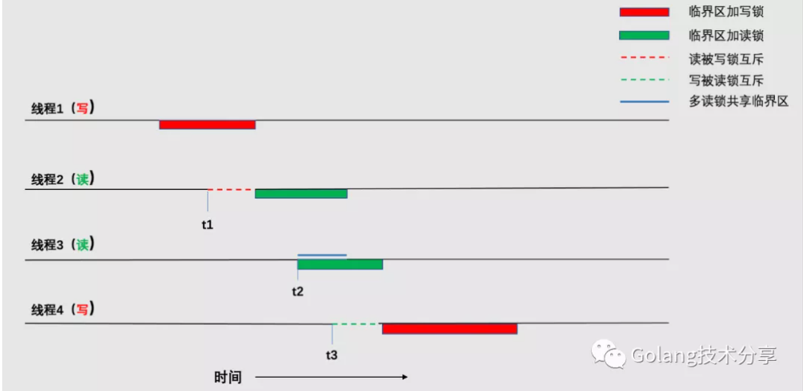
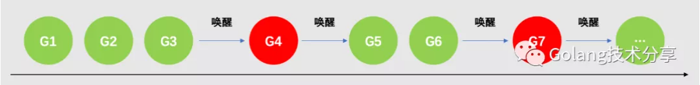

Go更细粒度的读写锁设计
在《Go精妙的互斥锁设计》一文中，我们详细地讲解了互斥锁的实现原理。互斥锁为了避免竞争条件，它只允许一个线程进入代码临界区，而由于锁竞争的存在，程序的执行效率会被降低。同时我们知道，只有多线程在共享资源中有写操作，才会引发竞态问题，只要资源没有发生变化，多线程读取相同的资源就是安全的。因此，我们引申出更细粒度的锁：读写锁。
什么是读写锁
读写锁是一种多读单写锁，分读和写两种锁，多个线程可以同时加读锁，但是写锁和写锁、写锁与读锁之间是互斥的。

读写锁对临界区的处理如上图所示。其中，t1时刻，由于线程1已加写锁，线程2被互斥等待写锁的释放；t2时刻，线程2已加读锁，线程3可以对其继续加读锁并进入临界区；t3时刻，线程3加了读锁，线程4被互斥等待读锁的释放。
饥饿问题
根据读写锁的性质，读者应该能猜到读写锁适用于读写分明的场景。根据优先级，可以分为读优先锁和写优先锁。读优先锁能允许最大并发，但是写线程可能被饿死；同理，写优先锁是优先服务写线程，这样读线程就可能被饿死。
相对而言，写锁饥饿的问题更为突出。因为读锁是共享的，如果当前临界区已经加了读锁，后续的线程继续加读锁是没问题的，但是如果一直有读锁的线程加锁，那尝试加写锁的线程则会一直获取不到锁，这样加写锁的线程一直被阻塞，导致了写锁饥饿。
同时，由于多读锁共享，可能会有读者问：为什么不直接去掉读锁，在写操作线程进来时只加写锁就好了呢，这样岂不是很好实现了。道理很简单，如果当前临界区加了写锁，在写锁解开之前又有新的写操作线程进来，等到写锁释放，新的写操作线程又上了写锁。这种情况如果连续不断，那整个程序就只能执行写操作线程，读操作线程就活活被饿死了。
所以，为了避免饥饿问题，通用的做法是实现公平读写锁，它将请求锁的线程用队列进行排队，保证了先入先出（FIFO）的原则进行加锁，这样就能有效地避免线程饥饿问题。
那Go语言的读写锁，对于饥饿问题，它是如何处理的呢？
Go读写锁设计
本文代码版本为Go 1.15.2。如下所示，sync.RWMutex结构体包含5个字段。
1 | 1type RWMutex struct { |
w互斥锁sync.Mutex，用于互斥写操作。writerSem写操作goroutine阻塞等待信号量。最后一个阻塞写操作的读操作goroutine释放读锁时，会通知阻塞的写锁goroutine。readerSem读操作goroutine阻塞等待信号量。写锁goroutine释放写锁后，会通知阻塞的读锁goroutine。readerCount读操作goroutine数量。readerWait阻塞写操作goroutine的读操作goroutine数量。
对于互斥锁的几个字段，现在可能不好理解，先不用着急，看完我们对sync.RWMutex对外提供的四个方法接口解析，就自然明白了。
RLock()：加读锁RUnlock()：解读锁Lock()：加写锁Unlock()：解写锁
下面，我们来依次分析。
1. 加读锁
这里，需要说明一下的是，为了更好理解代码逻辑，本文所有的代码块均去除了竞态检测的逻辑部分，即if race.Enabled {}方法块。
1 | 1func (rw *RWMutex) RLock() { |
atomic.AddInt32是一个原子性操作，其底层通过硬件指令LOCK实现封装（详情可见文章《同步原语的基石》）。rw.readerCount代表读操作goroutine数量，如果将其+1，还小于0，则通过用于同步库的sleep原语runtime_SemacquireMutex阻塞等待写锁释放。
简单地说，如果当前有写操作goroutine已经进来了，则新来的读操作goroutine会被排队阻塞等待。但是，读者肯定会觉得判断条件很奇怪，为什么rw.readerCount会是负值？不要急，下文会有答案。
当然，如果此时没有写锁，则仅仅将rw.readerCount数目加1，然后直接退出，代表加读锁成功。
2. 解读锁
1 | 1func (rw *RWMutex) RUnlock() { |
将读操作goroutine数目-1，如果其数目r大于等于0，则直接退出，代表解读锁成功。否则，带着当前处于负值的数目r进入以下rUnlockSlow逻辑：
1 | 1func (rw *RWMutex) rUnlockSlow(r int32) { |
如果r+1==0，则证明在解读锁时，其实并没有读goroutine加读锁；rwmutexMaxReaders = 1 << 30，这代表读写锁所能接收的最大读操作goroutine数量。至于这里为什么r+1 == -rwmutexMaxReaders也代表并没有goroutine加读锁，同样留在下文解答。在没有加读锁的锁上解读锁，会抛出异常并panic。
rw.readerWait代表写操作被阻塞时，读操作goroutine数量。如果该值为1，代表当前是最后一个阻塞写操作的goroutine，则通过用于同步库的wakeup原语runtime_Semrelease唤醒阻塞的写操作goroutine。
读者此时只看了加解读锁的代码，理解上会有困难，不要急，我们接着看加解写锁的逻辑。
3. 加写锁
1 | 1func (rw *RWMutex) Lock() { |
在加写锁时，首先会通过互斥锁加锁，这保证只会有一个写锁加锁成功。当互斥锁加锁成功之后，我们就能看到写操作是如何阻止读操作，读操作是如何感知到写操作的。
我们已经知道rw.readerCount是代表读操作goroutine数量，如果在不存在写操作的情况下，每次加读锁，该值就会+1，每次解读锁该值就会-1，那么我们可以合理地认为rw.readerCount的取值范围是[0,rwmutexMaxReaders],即最大支持2^30个并发读，最小是0个。
然而，在当前写操作goroutine加互斥锁成功后，会通过原子操作atomic.AddInt32将readerCount减去2^30，此时readerCount会变成负值，那么如果之后再有读操作goroutine加读锁时，能通过该负值知道当前已经有写锁了，从而阻塞等待。这里也解释了加读锁和解读锁两小节中留下的问题。最后，为了持有真实的读操作goroutine数目，再加回2^30即可。
这里需要格外注意的是：互斥锁加锁成功并不意味着加写锁成功。我们需要知道读操作是如何阻止写操作，写操作是如何感知到读操作的。
r != 0 即代表当前读操作goroutine不为0，这意味着写操作要等待排在前面的读操作结束后才算是加上写锁。写操作获得互斥锁后，通过atomic.AddInt32把rw.readerCount值拷贝到rw.readerWait中，用于标记排在写操作goroutine前面的读操作goroutine个数。通过用于同步库的sleep原语runtime_SemacquireMutex阻塞等待这些读操作结束。在解读锁小结中我们知道，读操作结束时，除了会递减rw.readerCount，同时需要递减rw.readerWait值，当rw.readerWait值变为0时就会唤醒阻塞的写操作goroutine。
4. 解写锁
1 | 1func (rw *RWMutex) Unlock() { |
在解写锁时，将负值的rw.readerCount变更为正值，解除对读锁的互斥，并唤醒r个因为写锁而阻塞的读操作goroutine。最后，通过调用互斥锁的Unlock方法，解除对写锁的互斥。
到这里，我们可以图解一下Go是如何解决饥饿问题的。

假设G1、G2、G3是正在共享读的goroutine，rw.readerCount值为3。此时写操作G4进来，把rw.readerCount值变为了负值，同时它发现rw.readerCount不为0，因此阻塞等待。但是在G4的等待期间又有新的读操作G5、G6和写操作G7进来。由于此时的rw.readerCount值为负，所以G5和G6是不能加读锁成功的，会陷入阻塞等待。G7由于G4加了互斥锁也会陷入等待。当排在写操作G4前面的最后一个读操作G3结束，G3会唤醒G4。当G4结束时，它将G5、G6和G7均唤醒。但是G7需要等待G5和G6退出（因为它在试图加写锁时，会发现rw.readerCount不为0，会再次陷入阻塞等待）才能加写锁成功。以此反复，保证了读写锁的相对公平，避免一方挨饿。
总结
读写锁基于互斥锁，提供了更细粒度的控制，它适用于读写分明的场景，准确而言是读操作远多于写操作的情况。在多读少写的场景中，使用读写锁替代互斥锁能有效地提高程序运行效率。
读读共享、读写互斥和写写互斥。在优先级方面，偏袒读锁或者写锁要分几种情况。
- 锁空闲，此时是完全公平的，谁先进来谁就可以上锁。
- 如果没有读操作，均是写操作，读写锁会退化成互斥锁，只有在互斥锁处于饥饿模式下才会公平。
- 如果没有写操作，均是读操作，读操作均可以进来，读写锁退化成无锁设计（也并不是真正的无锁，因为加解锁均有原子操作
atomic.AddInt32对读操作goroutine的统计）。 - 被加读锁时，写操作进来会被阻塞。在写操作阻塞期间，如果有读操作试图进来，它们也会被阻塞。当阻塞写操作的最后一个读操作解读锁时，它只会唤醒被阻塞的写操作，之后进来的读操作需要该写操作完成之后被唤醒。这些被唤醒的读操作会比新的写操作（可以是新来的，也可以是因互斥锁而被阻塞的）先拿到锁，等待这些读操作完成，新的写操作才能拿到写锁。
因为读写锁是基于互斥锁之上的设计，不可避免地多做了一些工作。因此，并不是说使用读写锁的收益一定会比互斥锁高。在选择何种锁时，需要综合考量读写操作的比例，临界区代码的耗时。性能比对的内容本文就不再讨论，读者可自行测试。